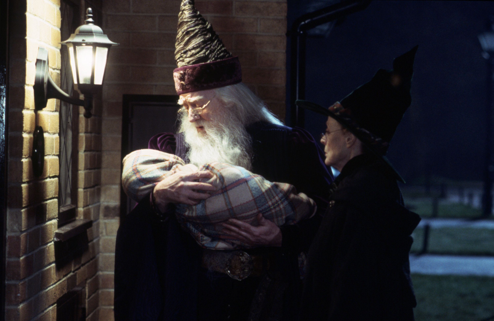
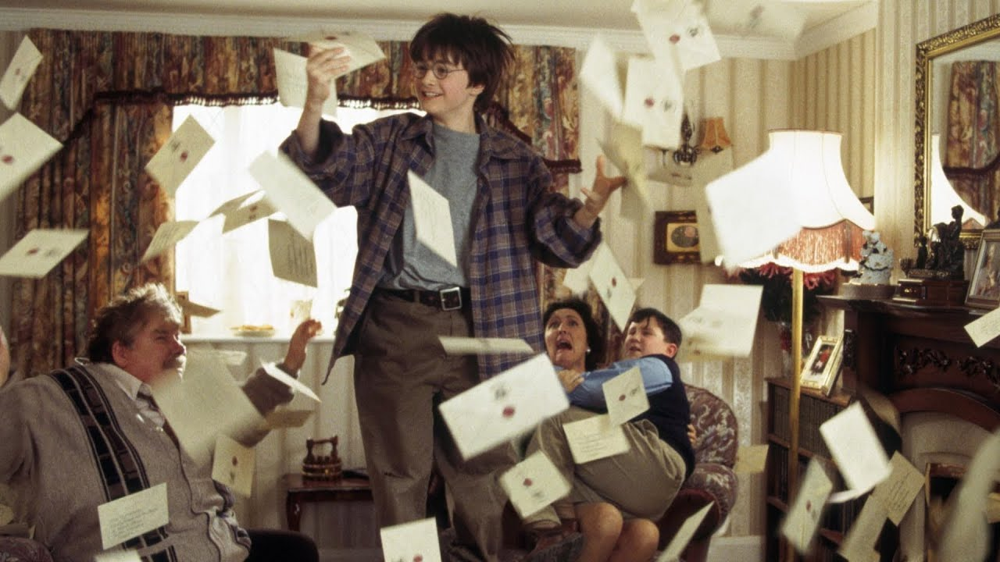
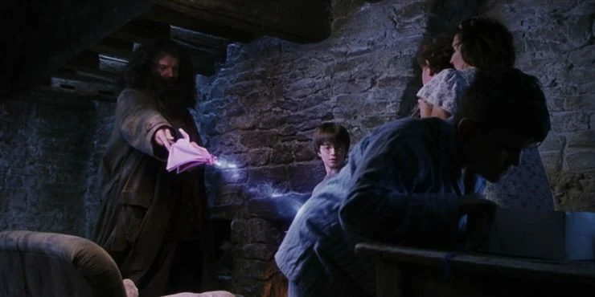
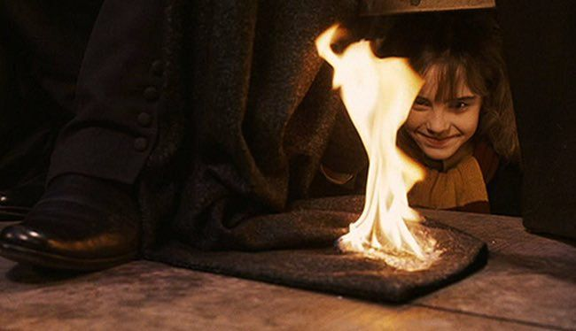

The audience is first introduced to the leitmotif at the very beginning of the movie in what can be seen as its “pure state” with original instrumentation within the theme as a whole. It begins with a french horn over the logos and then changes to being played on a celesta. Its beginning interval is then used as the audience sees Professor Dumbledore for the first time but ending with different notes. The audience hears a full line of the leitmotif after Dumbledore uses the magic deluminator to pull the lights from the street-lamps. We don’t hear it again until later in the scene when we see the headlight coming from the sky as Hagrid rides down on his motorcycle with Harry in his arms. This time, the leitmotif has returned to the original french horn instrumentation. Then once Dumbledore is holding Harry, the melody comes back in but feeling more hesitant or not fully formed. As the leitmotif represents the magic, it shows that while Harry already has magic, it may not be fully formed and the audience doesn’t know much about him. As Dumbledore places the letter on baby Harry in the basket, the theme comes back in played by the celesta before shifting to the full force of the melody played by the low brass during the movie title.

The next time the leitmotif comes in is when the audience sees the first owl bringing a letter to a house. The audience is unaware of what the letter is or where it is going until we see Harry getting the mail. However, before we know anything about the letter, we know that it has significance as magic and within the wizarding world. The motif continues to play whenever an owl is spotted bringing more letters. It stops when the magic does and Uncle Vernon is talking about how he loves Sundays because there is no post but once Harry notices the owl figure fly by the window it begins softly with the celesta building as all the owls are revealed outside. It culminates in the full brass orchestration as the letters come flying in through the fireplace and chaos ensues through the house.

The next time the leitmotif is present is when Hagrid is in the cabin with the Dursleys. After he tells Harry he is a wizard, the leitmotif plays softly with nothing else under it. The audience is getting both filmic (dialog) and musical confirmation that Harry is magical and part of the wizarding world. The leitmotif isn’t seen again until Harry reads his Hogwarts acceptance letter outloud. Then, the last time the motif is heard during this scene is when Hagrid sees Dudley eating Harry’s cake and gives him a pig’s tail. Because he is performing magic, it is clear that the leitmotif for magic would be played here.

The leitmotif returns again later in the film when Hermionie sets Snape’s cloak on fire. When she suspects Snape is jinxing Harry’s broom during the quidditch match, she runs to Snape under the stands to use a spell to light his cloak on fire. The leitmotif comes in played by flutes at a fast pace. The music mimics the urgency of the scene and doesn’t resolve finishing the melody right away. It stays repeating the last section of the motif for a moment as she says the spell before it is used to morph back into the bigger score for the scene when Snape sees the fire. The rhythm of the leitmotif in this scene is altered as well. Instead of slower sweeping quarter and eighth notes that we are used to in the leitmotif, it is a shorter set if eighth notes which mimic Willams’s already introduced leitmotif for mischief that can be found in scenes such as Harry releasing the snake at the beginning of the movie and Neville Longbottom flying on his broomstick for the first time. This adds a second layer to the scene through the music showing how Hermione isn’t just performing magic in a classroom setting, she is doing it in a mischievous way to help harry.
